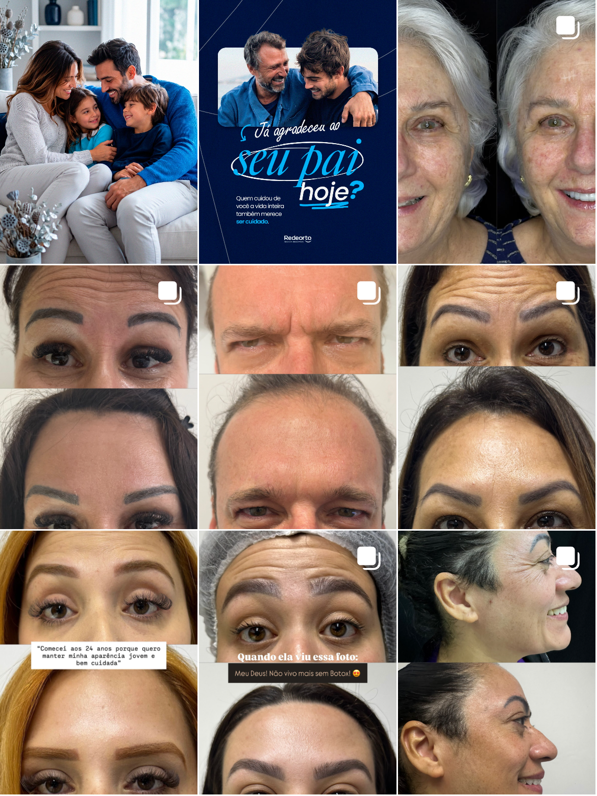
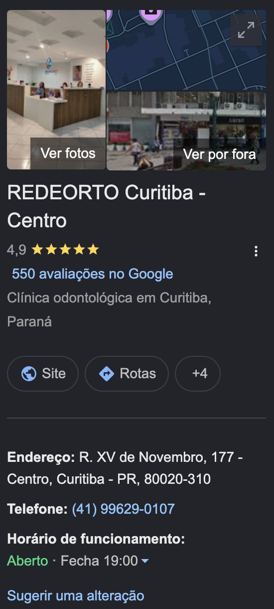
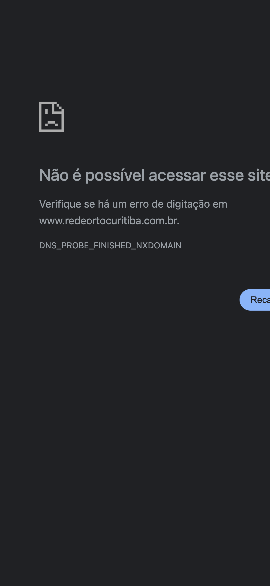

Um sistema completo pra transformar a sua clínica numa máquina previsível de pacientes. Tráfego, atendimento e comercial operando como uma coisa só.
B2Donto entrega tráfego que converte. Maia que atende 24h. comercial que fecha. o método que escala.
Você comprou a clínica faturando R$ 40 mil e furou sozinho a bolha dos 100, a dos 150, a dos 200. Chegou perto dos 250. A próxima é a dos 300, e você já disse qual é a diferença dessa vez: não fazer sozinho.
Você resumiu melhor que qualquer diagnóstico: "a gente tem um potencial muito grande de equipe, de coesão, de processos, de rituais. A gente só precisa de alguém que entenda isso e que realmente se comprometa em entregar."
→ Esse é o destino. O resto dessa página é o mapa até ele.
Abrimos cada canal por onde o paciente do centro de Curitiba procura vocês. O que a gente encontrou não é uma clínica com problema comercial. É uma clínica que fecha muito bem e recebe pouca gente pra fechar. Canal por canal:
Repara no desenho: conversão de 70 a 80% da avaliação pro fechamento, pré-vendedora interna respondendo na hora, campanha de indicação com ranqueamento e sorteio, 4,9 no Google. A máquina de fechar está montada e afiada.
E ainda tem duas frentes que vendem sem nenhum anúncio: 30 elementos de lente em resina por mês e 33 procedimentos de harmonização em julho. Vendem no boca a boca, contra a maré.
→ Seu gargalo não é fechar. É o que entra. A gente não vem mexer no que funciona, vem encher a fila da Dra. Eryca.
Esse é o print real do seu feed, puxado hoje. É a primeira coisa que o paciente vê depois de clicar no anúncio.

→ A vitrine mostra o procedimento de menor ticket e esconde os dois que mais dão margem. Quem entra pelo anúncio de implante não encontra motivo pra ficar.
Aqui está o seu melhor ativo, e o mais subaproveitado dos três.

→ Você tem a reputação que o dinheiro não compra e não tem pra onde levar quem confia nela. Na proposta entram as duas pontas: a página da unidade e a campanha de busca.
Esse print não é ilustração. Foi o que apareceu quando a gente digitou o seu domínio, hoje.

Esse é o item mais barato de resolver e o que está custando mais caro. É uma entrega de dias, não de meses.
→ Na proposta, o site da unidade entra no setup. A espera termina na primeira semana.
Pegamos três clínicas de Curitiba, uma por especialidade que você atende. A da sua rua, em ortodontia. Uma focada em implante. E uma focada em lente. Repare menos nos números e mais na linha de cima da tabela.
Arraste a tabela para o lado para ver as outras clínicas
Comece pelas duas primeiras linhas, porque elas não batem. A Redeorto Curitiba é uma clínica de ortodontia e implante. É isso que a sua equipe faz, é isso que o seu ticket sustenta, é isso que os anúncios da rede anunciam todo mês. Mas o feed mostra harmonização. Nos outros três, o que a clínica faz e o que o perfil mostra são a mesma coisa.
Na sua rua. A OrthoDontic disputa o mesmo pedestre a três quadras. A diferença ali não é técnica, estrutura, equipe nem reputação: no Google você tem 4,9 com 550 avaliações e ganha dos três. A diferença é que lá a dentista aparece falando pra câmera em quase todo post, e aqui a Dra. Eryca não aparece em nenhum. É exatamente o que você me disse que a sua esposa já quer fazer e faz bem. Só que lá chega pauta e roteiro. Aqui não.
No implante. Olhe a linha de publicações da Odontowicz: 37 posts, contra os seus 328. Você publica quase nove vezes mais e tem menos audiência que ela. Isso mata de vez a ideia de que o problema é volume de conteúdo. Não é. É que o perfil dela diz implante no nome e o seu não diz o que você faz.
Na lente. A Viotto tem 21 mil seguidores construídos só em cima de lente. Guarde esse número, porque ele mede uma coisa: o tamanho da demanda por lente em Curitiba. E você vende 30 elementos por mês sem gastar um real, só no boca a boca. Está pegando a sobra de um mercado desse tamanho.
→ Os três provam a mesma coisa por caminhos diferentes: em Curitiba, quem diz claramente o que faz constrói audiência. Você tem o produto, a mão que executa e a melhor reputação dos quatro. Falta a vitrine dizer o que a clínica é.
Você investe R$ 8 a 9 mil por mês, cobra, insiste, comprou o domínio do próprio bolso e ainda assim o resultado não vem. Tem um motivo, e ele não é você nem a sua equipe.
Hoje o seu marketing está partido em três mãos. A franqueadora decide a estratégia, escreve o roteiro e cuida da rede social. A empresa homologada roda o tráfego. A clínica recebe o que sobra e se vira. Ninguém responde pelo resultado final, então o roteiro do aniversário de três anos chega no dia 7 de agosto e o domínio que você comprou segue sem publicar. Você mesmo apontou a raiz na nossa conversa: quatro pessoas de marketing atendendo mais de setenta unidades, cada uma numa praça diferente. Não é má vontade, é aritmética.
Pensa num tratamento. Se um profissional faz o diagnóstico, outro o planejamento, outro a execução e outro o acompanhamento, o caso desanda e cada um culpa o outro. É o que acontece com a sua clínica hoje. A aceleradora existe pra juntar isso numa mão só, com um time que atende você e não setenta praças ao mesmo tempo.
E aqui vale o que você mesmo disse sobre proximidade: a gente é de Curitiba. Quando você fala Rua XV, sobreloja no calçadão, a gente sabe exatamente que paciente passa na frente. Reunião presencial na clínica quando fizer sentido, sem virar visita de fornecedor.
→ A Isa responde na hora, e é ótima nisso. A Maia cobre o resto: madrugada, domingo e o pico em que chegam cinco mensagens ao mesmo tempo. Braço biônico, não substituição.
Você pediu alguém que entenda o potencial que já existe aí dentro e se comprometa em entregar. É isso. A B2Donto não vende "tráfego", instala um método de 4 pilares que operam juntos, da vitrine ao paciente sentado na cadeira da Dra. Eryca.
→ Vocês cuidam da cadeira, que é onde vocês são imbatíveis. A gente cuida de encher a fila na frente dela.
Cada frente abaixo é instalada, operada e acompanhada pelo time B2Donto. Não é consultoria de slide, é execução.
Nada de promessa solta. Cada item abaixo ataca um gargalo que apareceu na nossa conversa de hoje, começando pelo que está parado há mais tempo. Vai marcando o que a gente entrega.
→ Os dois primeiros itens destravam o domínio que você já pagou e a campanha que reinicia todo mês. Os dois saem na primeira semana.
O investimento se divide em duas partes: o trabalho da B2Donto e a verba de mídia, que você paga direto à Meta e nunca passa pela gente.
A pergunta não é se o investimento cabe, é quantos casos pagam ele. No seu ticket de alinhador, um único tratamento a mais por mês já cobre a mensalidade com sobra. Você fecha entre 9 e 15 por mês só no orgânico.
+ Verba de mídia à parte, investida direto na Meta. Você define o teto e mantém o controle total.
Nossas clínicas têm 23× de retorno médio sobre o que investem. Mirando os R$ 300 mil por mês que você traçou, o investimento se paga no primeiro caso do mês.
E sobre o prazo: sem fidelidade. Os três primeiros meses são o ciclo mínimo pra entregar o setup e otimizar. A partir do quarto, você encerra quando quiser com aviso prévio. A gente prefere cliente que fica porque quer, não porque assinou.
→ Você já falou que trata isso como investimento, não como custo. A conta fecha: R$ 2.990 por mês contra R$ 80 mil por mês que estão na mesa.
Você disse que quer setembro começando com outro arco e outra energia. Dá tempo. Bateu o sim, o onboarding começa no mesmo dia.
→ Risco baixo, porque a gente vive de resultado, não de contrato. Sem fidelidade a partir do terceiro mês.
Você furou a dos 100, a dos 150 e a dos 200 sozinho. Essa aqui a gente fura junto. Bateu o sim, setembro já começa com a máquina rodando.
Aceitar proposta e começarMande "ACEITO" no WhatsApp e a gente inicia o onboarding da sua clínica